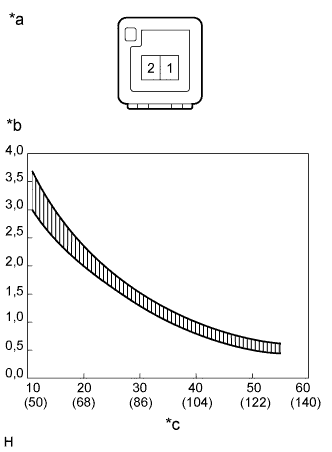

ДАТЧИК ТЕМПЕРАТУРЫ В САЛОНЕ (передний) > ПРОВЕРКА |
| 1. ПРОВЕРЬТЕ ТЕРМИСТОР СИСТЕМЫ КОНДИЦИОНИРОВАНИЯ (ДАТЧИК ТЕМПЕРАТУРЫ В САЛОНЕ) |
|  |
Измерьте сопротивление в соответствии со значениями, приведенными в таблице ниже.
| Контакты для подключения диагностического прибора | Состояние | Заданные условия |
| 1 - 2 | 10°C (50°F) | 3,00-3,73 кОм |
| 15°C (59°F) | 2,45-2,88 кОм | |
| 20°C (68°F) | 1,95-2,30 кОм | |
| 25°C (77°F) | 1,60-1,80 кОм | |
| 30°C (86°F) | 1,28 - 1,47 кОм | |
| 35°C (95°F) | 1,00 - 1,22 кОм | |
| 40°C (104°F) | 0,80 - 1,00 кОм | |
| 45°C (113°F) | 0,65 - 0,85 кОм | |
| 50°C (122°F) | 0,50 - 0,70 кОм | |
| 55°C (131°F) | 0,44 - 0,60 кОм | |
| 60°C (140°F) | 0,36–0,50 кОм |
| *a | Устройство с отсоединенным жгутом проводов (термистор системы кондиционирования (датчик температуры в салоне)) |
| *b | Сопротивление, кОм |
| *c | Температура, °C (°F) |